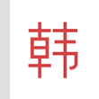

<footer id="footer">
    <div class="footer_wrap">
        <p class="btn_wrap">
            <button type="button">로그인</button>
            <button type="button">PC버전</button>
            <button type="button">전체 앱</button>
            <button type="button">전체서비스</button>
        </p>
        <p class="lnk_txt"><a href="#">사전 고객센터</a><a href="#">오류 신고</a><a href="#">사전 공식 블로그</a></p>
        <p class="notice">본 콘텐츠의 저작권은 제공처에 있으며, 이를 무단 <br>사용 시 저작권법 등에 따라 법적 책임을 질 수 있습니다.</p>
        <a href="#" class="lnk_naver">ⓒ NAVER Corp.</a>
    </div>
</footer>

<!-- IF cn-kr dic entry -->
<? if($langType == 'cnkr_kr' || $langType == 'cnkr_cn'){ ?>

<!-- Android home shortcut banner -->
<div class="shortcut">
	<a href="" class="shortcut_click">
		
		<span class="shortcut_text">네이버앱의</span><br>
		<span class="shortcut_text2"><em class="shortcut_text2_color">중국어사전</em> 홈 화면에 바로가기 추가</span>
		<span class="shortcut_ico2"></span>
	</a>
</div>
<!-- //Android home shortcut banner -->

<!-- iOS home shortcut layer -->
<div class="layer_shortcut">
	<div class="inner">
		<p class="layer_shortcut_row"><em class="text_color">중국어사전</em>을 빠르고 간편하게<br>
		이용하려면, <span class="ico_arrowup">공유</span>버튼을 눌러<br>
		<em class="text_color">홈 화면에 추가하세요.</em></p>
		<a href="" class="layer_shortcut_close" role="button"><span class="ico_x">레이어창 닫기</span></a>
		<span class="layer_shortcut_arrow"></span>
	</div>
</div>
<!-- //iOS home shortcut layer -->

<!-- IF kr-cn dic entry -->
<? }else if($langType == 'krcn_cn' || $langType == 'krcn_kr'){ ?>

<!-- Android home shortcut banner -->
<div class="shortcut">
	<a href="" class="shortcut_click">
		
		<span class="shortcut_text">네이버앱의</span><br>
		<span class="shortcut_text2"><em class="shortcut_text2_color">한중사전</em> 홈 화면에 바로가기 추가</span>
		<span class="shortcut_ico2"></span>
	</a>
</div>
<!-- //Android home shortcut banner -->

<!-- iOS home shortcut layer -->
<div class="layer_shortcut">
	<div class="inner">
		<p class="layer_shortcut_row">
			<em class="text_color">한중사전</em>을 빠르고 간편하게<br>
			이용하려면, <span class="ico_arrowup">공유</span>버튼을 눌러<br>
			<em class="text_color">홈 화면에 추가하세요.</em>
		</p>
		<a href="" class="layer_shortcut_close" role="button"><span class="ico_x">레이어창 닫기</span></a>
		<span class="layer_shortcut_arrow"></span>
	</div>
</div>
<!-- //iOS home shortcut layer -->

<? } ?>
